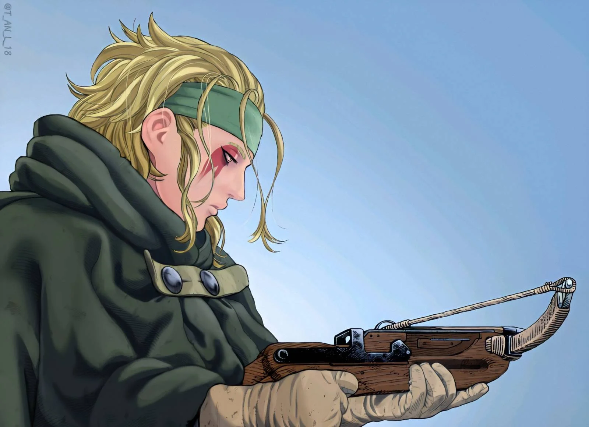
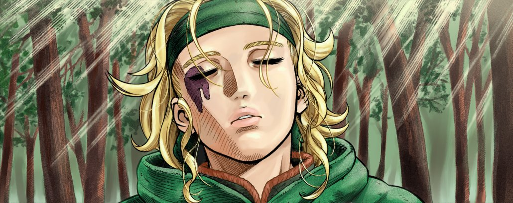

Hild
About Hild
Hild used to live in Norway as a hunter, mostly in solitude, up until Thorfinn and his group happened to stop by the area she was living in.
When she revealed Thorfinn was the one who murdered her father during the Viking invasion of her village, she attempted to kill him, but withheld after remembering the words of her father and the huntsman who helped her, and decided to travel with him to keep an eye on him, and kill him the second he returns to his old ways of killing.
Appearance
Her right eye appears heavily scarred and bloodshot due to her falling from a cliff while escaping a Viking raid. Her hair is held back by a green bandana, to allow her ears not to be covered when she is hunting, although she starts wearing her hair down sometimes after forgiving Thorfinn, likely due to not seeing a need to keep her guard up as much. She is often seen wearing a big dark green cloak with her self-made crossbow by her side. According to the author, she has a six pack and a very strong body, trained by hunting.
Personality
Hild starts out as a very introverted character who also acts very cold towards others, particularly Thorfinn. She also often makes sarcastic or sly remarks about others, like Bug-Eyes or Einar. She mostly keeps to herself and avoids getting close to anybody, while staying back during interactions, only watching Thorfinns every move. However, she has a soft spot for Children, and Karli, and eventually becomes something like a teacher to him and other kids in Arnheid Village.
She is an extremely intelligent craftsman, shown when she saw her Masters crossbow and immediately understood the mechanism and started making blueprints for crating a crossbow more useable for a woman, due to the crossbows weight and difficulty in use. She often invented things people around her never thought of. Despite her often cold demeanor, she is a kind person who cant bring herself to kill even her worst enemy.